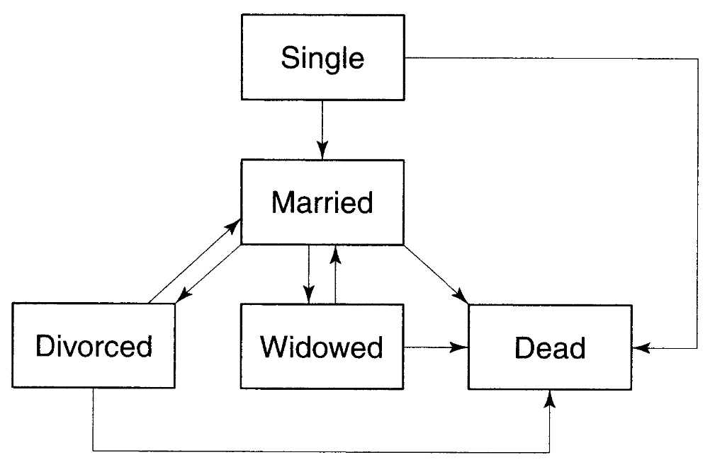
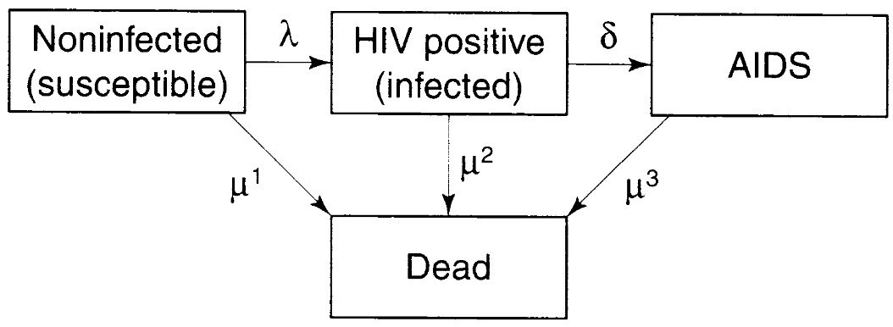
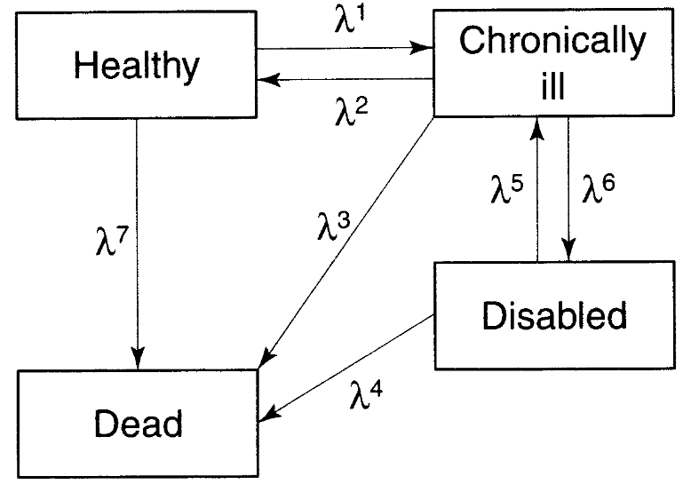
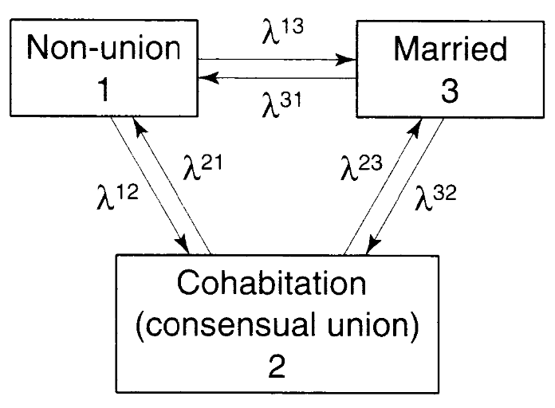

人口学勉強会購読資料(11,12章)
11 間接的推定方法 Indirect Estimation Methods
10章でおこなったようなデータの誤差を特定する方法では一貫性の確認は登録システムが存在していないため使えない国も存在する。これに対処するために’間接的’な方法が用いられてきた。本章では親族の生存と2つの国勢調査を用いた追加的な方法に焦点を当てる。
11.1 Estimation of Child Mortality from Information on Child Survivorship: The Brass Method
11.1.1 方法の記述
発展途上国でなお使われる方法は母親に産んだ子どもの数とを生存している子どもの数を尋ねて子どもの死亡を推定するBrass法である。Brass法は死亡割合を生命表形式での測定に変換する。
具体的に確認する。以下のような人口が存在するとする。
| 年齢\(x\) | \(l_x\) | \(q(x) = {}_x q_0 = 1 - l_x / l_0\) |
|---|---|---|
| 0 | 1000 | .000 |
| 1 | 880 | .120 |
| 2 | 850 | .150 |
| 3 | 840 | .160 |
| 4 | 835 | .165 |
| 5 | 830 | .170 |
| 10 | 800 | .200 |
もしかりにすべての女性が19.5歳に出産を終えると、\(y\)歳の女性の死亡した子どもの割合は\(y-19.5\)歳の子どもが死亡した割合に近似できる。
| 最終誕生日の女性年齢 | 実際年齢の平均 | 出産からの期間＝子どもの年齢 | これまで産んだ子どものうち死亡した割合 | 生命表の値 |
|---|---|---|---|---|
| 20 | 20.5 | 1 | 0.120 | \(q(1)\) |
| 21 | 21.5 | 2 | 0.150 | \(q(2)\) |
| 22 | 22.5 | 3 | 0.160 | \(q(3)\) |
| 23 | 23.5 | 4 | 0.165 | \(q(4)\) |
| 24 | 24.5 | 5 | 0.170 | \(q(5)\) |
| 29 | 29.5 | 10 | 0.200 | \(q(10)\) |
出産年齢がばらつくことを考慮すると、25歳までに子どもを産んだ女性の死亡した子どもは\(D(a)\)として報告される。ここから、25歳の女性での子どもの死亡割合は\(d_{25} = \frac{29.45}{200} = 0.147\)という、\(q(1.9)\)に近い値であることがわかる。これは年齢が上がるにつれて累積死亡率の上昇ペースが遅くなることが原因している。もし死亡率が年齢で均等に分配されていれば\(D(a)\)は30.6、\(d_{25}\)は\(\frac{30.6}{200} = 0.153\)となり、\(q(2.3)\)となる。
| 女性の出産年齢\(x\) | 出産からの期間 \(a = 25 - x\) |
出産数 \(B(a)\) |
\(q(a)\) | 死亡した子どもの数 \(B(a) \cdot q(a) = D(a)\) |
|---|---|---|---|---|
| 20.0 | 5 | 20 | 0.170 | 3.4 |
| 21.0 | 4 | 30 | 0.165 | 4.95 |
| 22.0 | 3 | 40 | 0.160 | 6.4 |
| 23.0 | 2 | 50 | 0.150 | 7.5 |
| 24.0 | 1 | 60 | 0.120 | 7.2 |
| Sum | 200 | 29.45 |
以上から含意されるのは、\(d_x\)は死亡レベル\(q(a)\)と出産の分布\(B(a)\)両方の関数であるということである。この関係は以下のように表現できる。
\[ d_i = \frac{D_i}{B_i} = \frac{\int^{i-\alpha}_0 D_i (a) da}{\int^{i-\alpha}_0 B_i (a) da} \tag{11.1}\label{eq:11.1} \]
\(d_i\)は調査時点の\(i\)歳の女性の過去の出生の時間分布を重みとした\(q(a)\)の重みづけ平均であることがわかる。\(c_i(a)\)は、\(a\)年前に起きた女性年齢の出生の割合(\(B_i(a)/B_i\))を示す。
\[ d_i = \frac{D_i}{B_i} = \frac{\int^{i-\alpha}_0 B_i (a) \cdot \frac{D_i (a) da}{B_i (a)}}{\int^{i-\alpha}_0 B_i (a) da} = \frac{\int^{i-\alpha}_0 B_i (a) \cdot q(a) da}{B_i} = \int^{i-\alpha}_o c_i (a) \cdot q(a) da \tag{11.2}\label{eq:11.2} \]
さらに、mean value theoremを用いて\(\ref{eq:11.3}\) 式を得る。\(\ref{eq:11.3}\) 式より、0から\(i-\alpha\)歳までに\(d_i = q(a^{\star})\)となるもっとも正確に子どもの死亡を識別する年齢\(a^{\star}\)が存在する。
\[ d_i = \int^{i-\alpha}_0 c_i (a) \cdot q(a) da = q(a^{\star}) \cdot \int^{i-\alpha}_o c_i (a) da = q(a^{\star}) \tag{11.3}\label{eq:11.3} \]
\(q(a) = K + j \cdot a\)という線形の関係を仮定すると、\(a^{\star}\)は出生からの平均時間\(A_b\)と一致することがわかる。
\[\begin{eqnarray} d_i &= \int^{i-\alpha}_0 c_i (a) \cdot q(a) da \\ &= \int^{i-\alpha}_o c_i (a) \cdot [K + j\cdot a] da \\ &= K \cdot \int^{i-\alpha}_0 c_i (a) da + j \cdot \int^{i-\alpha}_0 c_i (a) da \\ &= K + j \cdot A_b = q(A_b) \tag{11.4}\label{eq:11.4} \end{eqnarray}\]
Brassはこの方法をもとに母親の年齢と累積死亡率がもっともよく同定できる子どもの年齢との関係を明らかにした。この関係は出産経歴に依存する。Brassはこれに対処する出産経歴を調整する\(k_i\)を導入した（理想的には\(c_i (a)\)を調整することが望ましいが、利用できないことが多い）。
はじめに、各年齢でのの出産回数を求める。
\[ P_1 = P_{15-19} = \text{15-19歳の女性がこれまで産んだ子ども数の平均値} \]
\[ P_2 = P_{20-24} = \text{20-24歳の女性がこれまで産んだ子ども数の平均値} \]
\[ P_3 = P_{25-29} = \text{25-29歳の女性がこれまで産んだ子ども数の平均値} \]
一般的には出産のはやさを示す指標として\(\frac{P_1}{P_2}\)をもとめる。ある\(q(a)\)において、、より前に子どもが生まれているほど、より多くの割合が死亡しているほど\(\frac{P_1}{P_2}\)は高くなる。Brassの調整因子はシミュレーションによって発展させられた（詳細は省略）。
11.1.2 Brassタイプ推定における誤差と誤解釈のソース
Brass法にはいくつかの誤差と語解釈のソースが存在する。産んだ／死亡した子どもの誤報告、具体的には死産を生産として報告する、転居した子どもを報告しないといったことが第一に挙げられる。第二に、\(q(x)\)が死亡率のレベルに関連しているときに誤差が生じる。ただしこの誤差は手法内在的な問題ではない。出生率レベルの変化は手法内在的な問題であり、結果にバイアスをもたらす。具体的には、15-19歳の女性にもとづいた\(q(1)\)の推定値がかなり上方にバイアスする。第三に、母親の死亡というセレクションが存在する。もし死亡した母親の子どもの死亡率が高ければ、\(d_i\)は下方に偏る。HIVなどの感染症は母親の死亡と子どもの死亡が相関する可能性がある。
11.1.3 Brass法の亜種
Brass法にはいくつかの亜種がある。1つは母親の年齢の代わりに婚姻期間を使う方法である。婚姻期間は出産年齢より誤報告が少なく、若年層での出産よりも社会経済的差異が安定的という強みを持つ。2つ目に直近12ヶ月の出生情報を収集するものがあるが、これは死亡率を過小に推定する。代案として直近の出生の生存について尋ねる方法もあるが、やはり母親の死亡バイアスの問題は残る。その問題を克服するために、出産が起こる前の出産の生存に関する情報を収集するアプローチもある。病院などでこのアプローチを行うことで、即時的・簡易的に最新の情報を収集できる。なお年齢の誤報告の問題は残る。
11.2 Estimation of Adult Mortality Using Information on Orphanhood
11.2.1 方法の記述
成人死亡率の推定についてはBrass法に匹敵する強力な方法はなく、データや仮定に敏感となる。この問題にたいしてLouis Henryは孤児にたいして母親と父親の生存を尋ねる方法を提案した。直感的には、もしすべての出生が30歳で起こるとすると、母親子ども20歳のときに母親が生存している割合は\({}_{20} p^F_{30}\)となる（この際、成人死亡率は生存している子どもの数とは無相関であるという仮定を置いている）。
出産年齢は当然ばらつく。閉鎖人口における\(t\)時点で\(y\)歳の非孤児の数は\(\ref{eq:11.5}\) 式で表される。
\[ NO (y, t) = B(t - y) \cdot p(y) \cdot p_M(y) \tag{11.5}\label{eq:11.5} \]
同様に、閉鎖人口における\(t\)時点で\(y\)歳の人々の数は\(\ref{eq:11.6}\) 式で表される。
\[ N (y, t) = B(t - y) \cdot p(y) \tag{11.6}\label{eq:11.6} \]
ここから、\(t\)時点で\(y\)歳の割合\(\Pi(y, t)\)は\(y\)年前に子どもを産んだ母親が出産後\(y\)年間生存する確率\(p_M(y)\)と等しくなる。
\[ \Pi (y, t) = \frac{NO(y, t)}{N(y, t)} = \frac{B(t - y) \cdot p(y) \cdot p_M(y)}{B(t - y) \cdot p(y)} = p_M(y) \tag{11.7}\label{eq:11.7} \]
次いで、母親の生存確率は全女性と同じであると仮定し、多胎出産を無視して、この確率が生命表とどのように結びついているかを確認する。はじめに、\(t-y\)時点で出生した女性の\(t\)時点での生存数を\(W_{t-y}(t)\)と定義する。
\[ W_{t-y} (t) = \int^{50}_{15} B (x, t-y) \cdot {}_y p_x dx \tag{11.8}\label{eq:11.8} \]
\(W_{t-y}(t)\)を用いて\(p_M(y)\)を導出できる。
\[ p_M (y) = \frac{W_{t-y}(t)}{W_{t_y} (t-y)} = \int^{50}_{15} \frac{B(x, t - y)}{B(t - y)} \cdot {}_y p_x dx = \int^{50}_{15} v(x, t-y) \cdot {}_y p_x dx \tag{11.9}\label{eq:11.9} \]
\(\ref{eq:11.7}\) 式と\(\ref{eq:11.9}\) 式を組み合わせて\(\ref{eq:11.10}\) 式を得る。\(\ref{eq:11.10}\) 式より、\(t\)時点\(y\)歳で母親が生存している者の割合は、\(y\)年前の出生における母親の年齢分布を重みとした成人女性の生存確率の重みづけ平均であることがわかる。
\[ \Pi (y, t) = \int^{50}_{15} v(x, t-y) \cdot {}_y p_x dx \tag{11.10}\label{eq:11.10} \]
母親の生存割合を純粋な死亡率として解釈するためには、出生の影響を調整する必要がある。\({}_y p_{x} = K - j \cdot x\)（\({}_y p_{x}\)の線形性）を仮定すると、\(\Pi (y, t)\)は\(t-y\)時点の母親の平均年齢\(M^{\star}\)から\(M^{\star} + y\)歳まで生存する確率\({}_y p_{M^{\star}}\)と等しくなる。\(M^{\star}\)は出生時点の母親の平均年齢\(M^{\star}(t-y)\)ではなく調査時点の母親の平均年齢\(M^{\star}(t)\)より推定される。
\[\begin{eqnarray} \Pi (y, t) &= \int^{50}_{15} v(x, t-y) \cdot [K - j \cdot x] dx \\ &= K - j \cdot \int^{50}_{15} v(x, t-y) \cdot x dx \\ &= K - j \cdot M^{\star} \tag{ns1}\label{eq:ns1} \end{eqnarray}\]
\[ \Pi (y, t) = {}_y p_{M^{\star}} \tag{11.11}\label{eq:11.11} \]
\(\ref{eq:11.11}\) 式は子どもの年齢と母親の年齢の一致を通じて改善することができる。Hill and Trussell (1997)は\(\ref{eq:11.12}\) 式を導入し、非孤児の割合を一般的な生存確率への変換を行った。
\[ {}_y p_{25} = a_y + b_y \cdot M^{\star} + c_y \cdot {}_5 \Pi_{y-5} \tag{11.12}\label{eq:11.12} \]
調整因子は死亡率と出生率のモデルスケジュールのシミュレーションよりもとめる。この方法は父親の情報からもできなくはないが、上方には乏しいためあまり使えないだろう。
11.2.2 孤児法に関連する問題とバイアス
孤児法に関連する問題として、推定死亡率が特定の期間の死亡率を推定しているわけではない(期間固有死亡率を推定していない)、子どもの生存バイアス、生物学的母親ではなく養子縁組の母親について誤報告する縁組効果、子どもの年齢の誤報告などが挙げられる。
11.2.3 孤児法の亜種
調査が2時点以上あれば、variable-\(r\) equationの拡張として調査期間間の生存確率を推定できる。\(t\)時点で\(x\)歳の非孤児の数は\(\ref{eq:11.13}\) 式のように表される。
\[ NO(x, t) = NO(0, t) \cdot e^{\int^x_0 [r_{NO}(a, t) + \mu_{NO}(a, t) + \mu_M (a, t)] da} \tag{11.13}\label{eq:11.13} \]
同様に、全体の数は\(\ref{eq:11.14}\) 式のように表される。
\[ N(x, t) = N(0, t) \cdot e^{\int^x_0 [r(a, t) + \mu(a, t)] da} \tag{11.14}\label{eq:11.14} \]
\(\mu_{NO}(a, t) = \mu(a, t)\) を仮定し、\(t\)時点で\(x\)歳の非孤児の割合を求める。
\[ \frac{NO(x, t)}{N(x, t)} = \Pi (x, t) = e^{\int^x_0 [r_{NO}(a, t) - r(a, t) + \mu_M (a, t)] da} \tag{11.15}\label{eq:11.15} \]
\(\ref{eq:11.15}\) 式を変換して\(\ref{eq:11.16}\) 式を得る。
\[ \Pi(x) \cdot e^{\int^x_0 [r_{NO}(a) - r(a)] da} = e^{\int^x_0 [\mu_M (a)] da} \]
\[ \Pi(x) \cdot e^{\int^x_0 [r_{\pi}(a)] da} = \Pi^{\star}(x) \tag{11.16}\label{eq:11.16} \]
死亡率と出産年齢が一定であれば、\(r_{\pi}(a)\)はすべての年齢で0となり、\(\Pi(x)\)は\(\Pi^{\star}(x)\)の不偏推定値となる。そうでなければ、成長補正を行った後、変換された比率を用いて孤児法を遂行でき、調査期間間での死亡率推定値を得ることができる。そのほか、親が死亡した日時を直接尋ねる方法(ただし回答者が正確に覚えているとはかぎらない)、25歳以上の者に結婚の前と後のどちらで親が死亡したかを尋ねる方法、従来のBrass法の生存している子どもの数から非孤児の割合を尋ねる方法などもある。最後の方法は\(\ref{eq:11.17}\) 式として表現される。データの入手が簡単という強みがある。
\[ \frac{NO}{N} = \int^{\infty}_0 c(x) \int^{\beta}_{\alpha} v(a) \cdot {}_x p_a da dx \tag{ns2}\label{eq:ns2} \]
\[ \frac{NO}{N} = \Sigma^{\infty}_{x=0} {}_5 c_x \Sigma^{45}_{a = 15} {}_5 v_a \cdot \frac{5 \cdot l_{a+5+x}}{{}_5 l_a} \tag{11.17}\label{eq:11.17} \]
11.3 The Sisterhood Method for Estimating Maternal Mortality
これまで論じたテクニックはきょうだいの生存にも用いることができる。ただし、その情報は母ー子ほど正確ではない。そのなかにあって、出産で死亡した姉妹の割合から妊産婦死亡率の生涯リスクを推定する姉妹法が発展していった。
\(N(i)\)を\(i\)歳の回答者が報告した妊産婦死亡リスクのある姉妹の数、\(D^m_i\)のそのうち妊産婦死亡した姉妹の数とする。くわえて、死亡率と出生率を一定と仮定する。その上で、この方法は姉妹の妊産婦死亡割合\(\Pi^m (i) = D^m_i / N_i\)と妊産婦死亡の生涯リスク\(q^m (w)\)1と関連づける。そのために、2つの人口学モデルが用いられる。
通常の出生率・死亡率スケジュール：これを用いることで、回答者と姉妹の年齢の差\(z\)を対照的な分布\(\theta (z)\)として示すことができる(らしい)。
妊産婦死亡率モデル：これを用いることで、\(i\)歳で妊産婦死亡する確率\(q^m (i)\)と出生可能期間の終わりまでに妊産婦死亡する確率\(q^m (50)\)とを\(\ref{eq:11.18}\) 式のように関係づけることができる。\(c(i)\)は\(i\)歳の前に妊産婦死亡が起こる確率を示す。
\[ q^m (i) = c(i) \cdot q^m (50) \tag{11.18}\label{eq:11.18} \]
\(\Pi^m (i)\)は\(\ref{eq:11.19}\) 式として表現される。
\[ \Pi^m (i) = \int^{+\infty}_{-\infty} \theta (z) q^m (i+z) dz \tag{11.19}\label{eq:11.19} \]
\(\ref{eq:11.18}\) 式と\(\ref{eq:11.19}\) 式を合わせて、\(\Pi^m (i)\)と\(q^m (50)\)との関係を\(\ref{eq:11.20}\) 式として表現する。
\[ \Pi^m (i) = q^m (50) \cdot \int^{+\infty}_{-\infty} \theta (z) c(i+z) dz \tag{11.20}\label{eq:11.20} \]
姉妹の年齢が全員50歳を超えていれば\(c(i+z)\)は1に近くなるが、そうでなければ\(c(i+z)\)は1より小さくなり、結果として\(\Pi^m (i)\)は\(q^m (50)\)の過小推定となる。そのため、\(\int^{+\infty}_{-\infty} \theta (z) c(i+z) dz\)を調整因子\(A (i)\)として投入する。
\[ A (i) = \int^{+\infty}_{-\infty} \theta (z) c(i+z) dz \tag{11.21}\label{eq:11.21} \]
\(\ref{eq:11.20}\) 式を\(q^m (50)\)を左辺に置いて直す。
\[ q^m (50) = \frac{D^m (i)}{N(i) \cdot A(i)} \tag{11.22}\label{eq:11.22} \]
すべての年齢についての妊産婦死亡リスクを\(\ref{eq:11.23}\) 式より求める。
\[ Q^m (50) = \frac{\Sigma_i D^m (i)}{\Sigma_i N(i) \cdot A(i)} \tag{11.23}\label{eq:11.23} \]
基準年の推定のために、\(\ref{eq:11.24}\)を推定する。\(T\)はおよそ12年となりやすい。
\[ T = \frac{\Sigma_i N(i) \cdot A(i) \cdot T(i)}{\Sigma_i N(i) \cdot A(i)} \tag{11.24}\label{eq:11.24} \]
姉妹法の問題として、きょうだい数と生存確率が独立という仮定、誤報告、妊産婦死亡の定義が特定の妊娠に関係した環境よりもむしろ妊娠に関係した死亡タイミングにもとづいている、死亡数が少ないといった点が挙げられる。
11.4 Estimating Mortality and Fertility from Maternity Histories
11.4.1 完全出産歴による子ども死亡率の推定
人口動態統計がない国において子どもの死亡率を推定する共通の方法は、間断のない出生歴を調査し、彼女らから産んだ子どもとそのうち死亡した子どもの数を尋ねることである。ただし、この調査は負荷が大きい。出産歴から子どもの死亡率を直接推定することは、従来の国勢調査と人口動態登録データの組み合わせにもとづく推定にはないさまざまなバイアス2の影響を受ける。
11.4.2 完全出産歴による出生率の推定
完全出産歴は出生率のレベルとトレンドの趨勢にも使用でき、年齢固有出生率のをよく推定するが、TFRのトレンドについてはほとんど意味がない。TFRを推定するためには50歳以上に尋ねるか、年齢パターンのモデルを用いる必要がある。
11.5 Indirect Estimation Methods Using Age Distributions at Two Censuses
2つの国勢調査を用いて(閉鎖人口の)コホートの成長を追うことで間接的に推定する方法もある。そのもっとも簡単な方法はそれぞれのコホートにおける国勢調査間での生存割合を計算し、コーホート生命表関数に直接写像される。
\[ \frac{{}_5 N_{x+5} (t+5)}{{}_5 N_x (t)} = \frac{{}_5 L_{x+5}}{{}_5 L_x} \tag{11.25}\label{eq:11.25} \]
完全な生命表のためには、国勢調査間における出生の情報も必要となる。ただしこの情報は多くの場合入手困難であるため、5歳から始まる生命表を作成する。
\[ \frac{{}_5 N_0 (t+5)}{B[t, t+5]} = \frac{{}_5 L_0}{5 \cdot l_0} \tag{11.26}\label{eq:11.26} \]
このアプローチは成人死亡率の推定には難しい。成人死亡率はかなり低く、流出や年齢の誤報告で結果が大きく変わりうる。
11.5.1 累積と投影を用いた国勢調査間の死亡率の推定
年齢の誤報告により生じる問題に対処する1つの方法は、年齢固有の生存率を課すモデル生命表を導入することにある。たとえば、1980年と1990年の国勢調査における5歳刻みの年齢の人口の行列は\(\ref{eq:ns3}\) 式となる。
\[ \begin{matrix} {}_5 N_0 (1980) & {}_5 N_0 (1990) \\ {}_5 N_5 (1980) & {}_5 N_5 (1990) \\ {}_5 N_{10} (1980) & {}_5 N_{10} (1990) \\ \cdots \cdots & {}_5 N_{15} (1990) \\ \cdots \cdots & \cdots \cdots \\ \end{matrix} \tag{ns3}\label{eq:ns3} \]
1980年の0歳以上の人口を1990年の10歳以上の人口まで生存させる死亡率を得る、すなわち980年の0歳以上人口を投影して1990年の10歳以上人口を推計することで問題に対処する。モデル生命表を\(e^o_0 = 50.0\)と選択すると、\(\ref{eq:11.27}\) 式のような近似式が得られる。
\[\begin{eqnarray} N^{50}_{10+} (1990) &= {}_5 N^{50}_{10} (1990) + {}_5 N^{50}_{15} (1990) + {}_5 N^{50}_{20} (1990) + \cdots\\ &= {}_5 N_0 (1980) \frac{{}_5 L^{50}_{10}}{{}_5 L^{50}_0} + {}_5 N_0 (1980) \frac{{}_5 L^{50}_{10}}{{}_5 L^{50}_5} + {}_5 N_0 (1980) \frac{{}_5 L^{50}_{10}}{{}_5 L^{50}_{10}} + \cdots \tag{11.27}\label{eq:11.27} \end{eqnarray}\]
この手法は閉鎖人口と2つの国勢調査の完全性、死亡率がモデル生命表のあるfamilyに属する(そこまで侵犯されても深刻ではない)、という少ない仮定にさえもとづけば良いため、魅力的である。年齢のmisreportingだけでなくmisstaatementにも影響を受ける(?)。先の時代への投影だけでなく後ろの時代への投影にも適用できるが、年齢分布が最初の国勢調査ではなく2回目の国勢調査に依拠する点で同じ推定値になるとはかぎらない。
11.5.2 2つの年齢分布による人口学的推定のための統合システム
モデル生命表で平均余命を選択する代わりに、2つの国勢調査を用いてモデル生命表システム内の死亡率間の関係を数学的に表現した方法を紹介する。それには粗出生率と真の年齢分布が必要となる。9章の9.3式にもとづいて、基準生命表をあらゆる生命表に関係づける。\(\ref{eq:11.28}\) 式を得る。\(q_s(a)\)、\(p_s(a)\)は’基準’における\(q(a)\)、\(p(a)\)を、\(\alpha\)、\(\beta\)は基準生命表をあらゆる生命表に関係づけるためのパラメータである。\(\alpha\)が大きいほど基準より死亡率が高く、\(\beta\)が大きいほど幼少期より成人期の方が死亡率が高い。
\[ In \left[ \frac{q(a)}{p(a)} \right] = \alpha + \beta \cdot In \left[ \frac{q_s(a)}{p_s(a)} \right] \tag{11.28}\label{eq:11.28} \]
\(q(a) = 1 - p(a)\)より、\(\ref{eq:11.29}\) 式を得る。
\[ \frac{1 - p(a)}{p(a)} = e^{\alpha} \left[ \frac{q_s(a)}{p_s(a)} \right]^{\beta} \tag{ns4}\label{eq:ns4} \]
\[ \frac{1}{p(a)} = e^{\alpha} \left[ \frac{q_s(a)}{p_s(a)} \right]^{\beta} + 1 \tag{11.29}\label{eq:11.29} \]
8章より、ある閉鎖人口において、\(\ref{eq:11.30}\) 式が成り立つ。
\[ c(a) = be^{- \int^a_0 r(x) dx} p(a) \tag{ns5}\label{eq:ns5} \]
\[ \frac{1}{p(a)} = \frac{be^{- \int^a_0 r(x) dx}}{c(a)} \tag{11.30}\label{eq:11.30} \]
\(\ref{eq:11.29}\) 式と\(\ref{eq:11.30}\) 式を組み合わせ、\(e^{\alpha} = K\)、\(\beta = 1\)を置き、\(\ref{eq:11.31}\) 式を得る。
\[ \frac{e^{- \int^a_0 r(x) dx}}{c(a)} = \frac{1}{b} + \frac{K}{b} \left[ \frac{q_s(a)}{p_s(a)} \right] \tag{11.31}\label{eq:11.31} \]
\(\ref{eq:11.31}\) 式はシンプルな線形関数となり、切片は人口の出生率の逆数を、切片と傾きの比は基準と比較した死亡率のレベルの推定と等しい。\(c(a)\)を\(({}_5 c_{a-5} + {}_5 c_a) / 10\)を用いた線形補間によって推定し、子ども期の死亡率が得られれば、\(\ref{eq:11.32}\)として5歳以上の分析に限定することができる。\(p^{\star} (5)\)は5歳以上の生存についての推定値を示す。
\[ \frac{p^{\star} (5) e^{- \int^a_0 r(x) dx}}{c(a)} = \frac{1}{b} + \frac{K}{b} \left[ \frac{q^5_s(a)}{p^5_s(a)} \right], \text{ with } a \geq 5 \tag{11.32}\label{eq:11.32} \]
Heligman (1985)はこの方法を’真の’年齢分布を推定するために用いた。\(\ref{eq:11.28}\) 式にvariable-r方程式を応用して国勢調査間の生命表を再構成することができる。
\[ {}_5 C^{\star}_a = be^{- \int^{a+2.5}_0 r(x) dx} \frac{{}_5 L_a}{l_0} \tag{11.33}\label{eq:11.33} \]
11.5.3 国勢調査間の年齢スケジュールを推定するための反復的コホート内補間
反復的コホート内補間は2つの国勢調査における人口の年齢構造を比較してその間の脱落の情報を得る手法である。反復的コホート内補間は年齢別成長率が国勢調査間で一定であるという仮定を緩和する点で意義がある。2つの国勢調査における年齢別の女性の平均出産回数を用いて、以下のような手続きでもとめる。
はじめに、出産回数が国勢調査間に線形に増加すると仮定する。そして、各コーホートの出生率の加重平均を作成し、平均年齢別出生率を得る。次いで、この推定された出産回数と観察された出産回数とを比較し、そのズレを算出する。それにもとづいて平均年齢ー期間別出生率を算出する。結果的に出生率は2つの国勢調査の平均出産回数と一致する(らしい)。
この手法は出産回数以外にも適用できるが、死亡率については異なるアプローチが求められる。死亡が生起する割合がそれぞれの年齢区間で一定という仮定のもと、国勢調査間の生存者数は\(\ref{eq:11.34}\) 式となる。\({}_1 N_x (t)\)は\(t\)時点の\(x\)から\(x+1\)歳までの生存者数を、\({}_1 M_x\)\(x\)から\(x+1\)歳までにイベントが起きた国勢調査間での割合をそれぞれ示している。
\[ {}_1 N_{x+2} (t+2) = {}_1 N_x (t) \cdot e^{- \left\{ \frac{{}_1 M_x}{2} + {}_1 M_{x+1} + \frac{{}_1 M_x{x+2}}{2} \right\}} \tag{11.34}\label{eq:11.34} \]
対数を取って、
\[ - \text{In} \{ {}_1 N_{x+2} (t+2) \} = - \text{In} \{{}_1 N_x (t) \} + \frac{{}_1 M_x}{2} + {}_1 M_{x+1} \frac{{}_1 M_{x+2}}{2} \tag{11.35}\label{eq:11.35} \]
となる。
12 多相生命表 Increment—Decrement Life Tables
12.1 Introduction
生命表は観察下にある個人がある状態から別の状態に移行する3際のあらゆるイベントに適応できる。3章で紹介した死亡プロセスは以下3つの仮定に依拠したモデルである。結婚といったイベントからも分かるように、これは緩める必要のある仮定である。
単純状態空間：個人は2つの状態のみを表現できる。
イベントの適切さ：すべての個人が最終的には状態1から状態2に移行する。
向かう状態は不可逆的：状態2に移行した者は決して状態1に戻らない。
4章では向かう状態の複数性と競合性について扱った。これは1の仮定は緩められているが残りの仮定にはなお依拠している。後半2つの仮定を緩めるために、多相表を導入する。
12.2 Increment-Decrement Life Tables
12.2.1 結婚と離婚
結婚と離婚は多相モデルで理解できるもっともシンプルなイベントである。多かれ少なかれすべての女性は最終的には結婚するが、同時に離死別を経験し、最終的には女性自身の死亡で結婚の状態は終了する。

出所）Preston et al.(2000, figure 12.1)
12.2.2 HIV/AIDS
HIVも陰性→陽性→AIDSという多相状態の事例である。HIV/AIDSの例は不可逆的な状態遷移であるものの、全員が感染するわけではない点で興味深い特性を持つ。その点で、感染する人々の割合の推定が重要となる。さらに、感染からAIDSへの移行には期間だけでなく年齢もかかわる。

出所）Preston et al.(2000, figure 12.2)
12.2.3 健康、慢性疾患、障害
健康状態の変化はコホートや年齢、時代によって異なる。この変化を理解するためにも多相モデルは役に立つ。ほとんどの者は健康な状態から始まり、慢性疾患→障害という遷移をする(健康→障害はここでは想定しない)。それぞれの遷移確率から慢性疾患や障害の普及を学習することができる。

出所）Preston et al.(2000, figure 12.3)
12.3 Estimation of Increment-Decrement Life Tables
12.3.1 結婚、同棲、そして破綻
同棲(consensual unions)は(米国で)ますます増加しており、それは婚外子の増加にもつながり、離別確率も高い。さらには子どもの経験にも影響を与える。
Bumpass and Lu (2000)ではさまざまな年齢の子どもの経験を(母)親の婚姻状態の関数として要約することでこの問題に対処している。子どものいる母親を対象に、0から15歳までの子どもの経験について、ひとり親／同棲／結婚の状態との比較をしている。\(\lambda^{12}(x)\)は子どもが\(x\)から\(x + \delta x\)歳にひとり親から同棲に移行する確率を、\(\lambda^{23}(x)\)は同棲から結婚に移行する確率をそれぞれ示す。Figure 4 は同棲を含んでいる点では複雑となっているが、死亡を無視している点ではシンプルと言える。

出所）Preston et al.(2000, figure 12.3)
12.3.2 率の推定
回顧的な調査を用いて、単年年齢(\(x\)歳)固有のある状態\(i\)から別の状態\(j\)への遷移率\({}_1 M^{ij}_x\)を Table 1 として推定した。この例では出発点と到達点のみを考慮し、\(l(x)\)の線形性を仮定することで、すべての年齢層について\({}_1 M_x\)から\({}_1 q_x\)を推定し、そこからさらに\({}_1 d_x\)と\({}_1 L_x\)を推定することができる。それぞれ、\(\ref{eq:12.1}\) 式より求められる。それぞれの年齢\(x\)において\(l(x)\)は\(l(0)\)の任意の基数または値より求められる。したがって、\({}_1 d_x\)が\(\ref{eq:ns6}\) 式より、\({}_1 q_x\)が\(\ref{eq:ns7}\) 式よりそれぞれ求められる。
\[\begin{eqnarray} l(x+1) =& l(x) - {}_1 d_x \\ {}_1 d_x =& {}_1 M_x \cdot {}_1 L_x \\ {}_1 L_x =& 0.5 \cdot [l(x) + l(x+1)] \tag{12.1}\label{eq:12.1} \end{eqnarray}\]
| 年齢 | 年齢区間の最初の状態 | |||||
|---|---|---|---|---|---|---|
| 1(ひとり親) | 2(同棲) | 3(結婚) | ||||
| 到達 | 到達 | 到達 | ||||
| 2 | 3 | 1 | 3 | 1 | 2 | |
| 0 | 0.0777 | 0.0421 | 0.0968 | 0.1460 | 0.0121 | 0.0086 |
| 1 | 0.0858 | 0.0405 | 0.0984 | 0.1460 | 0.0211 | 0.0082 |
| 2 | 0.1068 | 0.0350 | 0.0759 | 0.1468 | 0.0196 | 0.0069 |
| 3 | 0.1054 | 0.0354 | 0.0829 | 0.1639 | 0.0210 | 0.0045 |
| \(\vdots\) | \(\vdots\) | \(\vdots\) | \(\vdots\) | \(\vdots\) | \(\vdots\) | \(\vdots\) |
| 13 | 0.0427 | 0.0313 | 0.0812 | 0.1307 | 0.0204 | 0.0071 |
| 14 | 0.0837 | 0.0314 | 0.0851 | 0.0712 | 0.0260 | 0.0066 |
\[ {}_1 d_x = l(x) \cdot \frac{{}_1 M_x}{1 + 0.5 \cdot {}_1 M_x} \tag{ns6}\label{eq:ns6} \]
\[ l(x+1) = l(x) \cdot \frac{1 - 0.5 \cdot {}_1 M_x}{1 + 0.5 \cdot {}_1 M_x} \tag{12.2}\label{eq:12.2} \]
\[ {}_1 q_x = \frac{{}_1 M_x}{1 + 0.5 \cdot {}_1 M_x} \tag{ns7}\label{eq:ns7} \]
多相生命表について、それぞれの量は以下のように得られる。
\[\begin{eqnarray} l^i(x+1) =& l_i(x) + \Sigma_j {}_1 d^{ji}_x - \Sigma_j {}_1 d^{ji}_x \hspace{2em}&\text{Equation of type I} \\ {}_1 d^{ij}_x =& {}_1 M^{ij}_x \cdot {}_1 L^i_x \hspace{2em}&\text{Equation of type II}\\ {}_1 L_x =& 0.5 \cdot [l^i(x) + l^i(x+1)] \hspace{2em}&\text{Equation of type III} \tag{12.3}\label{eq:12.3} \end{eqnarray}\]
ここでの仮定はすべての\(i\)について\(l^i(0) = 1000\)が成り立つという、すなわち\(0\)歳の子ども3000人から始まるという仮定を置いている。
12.3.3 推定値の解釈
Table 2 に示した\({}_1 q^{ij}_x\)の条件付き確率の総和は1であり、子どもの死亡がないという仮定のもと、\(l^i(x)\)と\({}_1 d^{ij}_x\)は Table 3 として表現できる。
| 年齢 | 年齢区間の最初の状態 | ||||||||
|---|---|---|---|---|---|---|---|---|---|
| 1(ひとり親) | 2(同棲) | 3(結婚) | |||||||
| 到達 | 到達 | 到達 | |||||||
| 1 | 2 | 3 | 1 | 2 | 3 | 1 | 2 | 3 | |
| 0 | 0.8902 | 0.0657 | 0.0421 | 0.0823 | 0.7868 | 0.1308 | 0.0117 | 0.0080 | 0.9802 |
| 1 | 0.8850 | 0.0858 | 0.0405 | 0.0841 | 0.7898 | 0.1261 | 0.0199 | 0.0080 | 0.9721 |
| 2 | 0.8711 | 0.0900 | 0.0381 | 0.0651 | 0.8032 | 0.1317 | 0.0183 | 0.0070 | 0.9747 |
| \(\vdots\) | \(\vdots\) | \(\vdots\) | \(\vdots\) | \(\vdots\) | \(\vdots\) | \(\vdots\) | \(\vdots\) | \(\vdots\) | \(\vdots\) |
| 13 | 0.9304 | 0.0374 | 0.0322 | 0.0720 | 0.8102 | 0.1178 | 0.0197 | 0.0067 | 0.9736 |
| 14 | 0.8945 | 0.0736 | 0.0318 | 0.0756 | 0.8582 | 0.0663 | 0.0245 | 0.0070 | 0.9685 |
| 年齢 | 年齢区間の最初の状態 | ||||||||
|---|---|---|---|---|---|---|---|---|---|
| 1(ひとり親) | 2(同棲) | 3(結婚) | |||||||
| 到達 | 到達 | 到達 | |||||||
| \(l^1(x)\) | \({}_1 d^{12}_x\) | \({}_1 d^{13}_x\) | \(l^2(x)\) | \({}_1 d^{21}_x\) | \({}_1 d^{23}_x\) | \(l^3(x)\) | \({}_1 d^{31}_x\) | \({}_1 d^{32}_x\) | |
| 0 | 1000 | 66 | 44 | 1000 | 82 | 131 | 1000 | 12 | 8 |
| 1 | 984 | 71 | 42 | 861 | 72 | 109 | 1155 | 23 | 9 |
| 2 | 966 | 87 | 37 | 760 | 49 | 100 | 1378 | 27 | 7 |
| \(\vdots\) | \(\vdots\) | \(\vdots\) | \(\vdots\) | \(\vdots\) | \(\vdots\) | \(\vdots\) | \(\vdots\) | \(\vdots\) | \(\vdots\) |
| 13 | 714 | 27 | 23 | 355 | 26 | 42 | 1931 | 38 | 13 |
| 14 | 728 | 54 | 23 | 327 | 25 | 22 | 1945 | 48 | 14 |
| 15 | 724 | 348 | 1928 |
\({}_1 d^{ij}_x\)は単純に解釈できる。2歳時点でひとり親にとどまった者は966人、同棲に移行した者は87人、結婚に移行した者は37人である。\(l^i(x)\)の解釈には留意が必要。すべての年齢で増加と減少を経験するため、\(l^i(0)\)は\(l^i(x)\)の基準としては使用できないし、\(\frac{l^i(x+k)}{l^i(x)}\)もまた使用できない。ただし、\(\frac{l^i(x)}{\Sigma_i l^i(0)}\)は\(x\)歳で状態\(i\)にある確率として表現できる。
多相生命表の平均余命には2種類ある。1つは出発点に関係ない特定の状態にある平均期間として表現される条件付きでない期間であり、もう1つは条件付き期間である。前者は\(x\)歳後に状態\(j\)で生存した期間の数\(e^j(x)\)として表現され、\(\Sigma_j e^j(0) = e(0)\)が成り立つ。後者は\(x\)歳で状態\(i\)にある者のうち、状態\(k\)で生存した期間の数\(\psi^{ij}(x)\)として表現され、\(x\)歳で状態\(i\)を占めていたコホートが状態\(j\)で過ごした期間から推定される。
12.4 Formalization and Generalization of Relations
12.4.1 \({}_1 d^{ij}_x\)の性質
\({}_1 d^{ij}_x\)はある状態への／からの移行の結果である。ただし、\(x\)から\(x+1\)の間にも複数の移行をする可能性がある(例、ひとり親→同棲→ひとり親)。それゆえ、\({}_1 d^{ij}_x\)はたとえば同棲から始まり、結婚へ移行し、\(x+1\)歳になる前にふたたび同棲する個人を除外している。
12.4.2 \(l^i(x+1)\)の性質
ある状態から別の状態に移行することがあるため、\(l^i(x+1)\)は加齢とともに減るとは必ずしもかぎらない。\(l^i(x+1)\)は遷移割合と\(l^j(x)\)に影響する。
12.4.3 一般的な接続
増加と減少の同時的な関係は行列形式で表現することでより完全となる。その行列を\(x\)歳に状態\(i\)ではじまり\(x+1\)歳に状態\(j\)で終わる要素\({}^i l^j (x+1)\)からなる\(\mathbf{l}(x+1)\)として表現する。\({}^i l^j (x+1)\)は状態\(i\)から状態\(j\)に移動した個人の数を示す\({}_1 d^{ij}_x\)と異なり、\(x\)歳で状態\(i\)からスタートした「コホート」の生存者を表している。
\({}_1 d^{ij}_x\)を通じた\(\mathbf{l}(x+1)\)と\(\mathbf{l}(x)\)との関係は\(\ref{eq:12.4}\) 式で表現される。状態は\(k\)個ある。\(\mathbf{D}(x)\)は増減の行列を示している。
\[ \mathbf{l}(x+1) = \mathbf{l}(x) - \mathbf{D}(x) \tag{12.4}\label{eq:12.4} \]
まとめずに示すと\(\ref{eq:ns8}\) 式となる。Table 3 をみると分かる。
\[\begin{eqnarray} \begin{pmatrix} {}^1 l^1 (x+1) & {}^1 l^2 (x+1) & \cdots & {}^1 l^k (x+1) \\ {}^2 l^1 (x+1) & {}^2 l^2 (x+1) & \cdots & {}^2 l^k (x+1) \\ \vdots & \vdots & \ddots & \vdots \\ {}^k l^1 (x+1) & {}^k l^2 (x+1) & \cdots & {}^k l^k (x+1) \\ \end{pmatrix} =& \begin{pmatrix} {}^1 l^1 (x) & 0 & \cdots & 0 \\ 0 & {}^2 l^2 (x) & \cdots & 0 \\ \vdots & \vdots & \ddots & \vdots \\ 0 & 0 & \cdots & {}^k l^k (x+1) \\ \end{pmatrix}\\ -& \begin{pmatrix} \Sigma_j {}_1 d^{1j}_x & -{}_1 d^{12}_x & \cdots & -{}_1 d^{1k}_x \\ -{}_1 d^{21}_x & \Sigma_j {}_1 d^{2j}_x & \cdots & -{}_1 d^{2k}_x \\ \vdots & \vdots & \ddots & \vdots \\ -{}_1 d^{k1}_x & -{}_1 d^{k2}_x & \cdots & \Sigma_j {}_1 d^{kj}_x \\ \end{pmatrix} \tag{ns8}\label{eq:ns8} \end{eqnarray}\]
\(\ref{eq:12.4}\) 式は\(\ref{eq:12.3}\) 式Type Iのすべての情報を含んでいる。行列\(\mathbf{D}\)の対角の値がすべて減少であるため、行列\(\mathbf{l}(x+1)\)の対角要素は常に小さくなる。通常の生命表と異なり、全年齢\(x\)における状態\(i\)からの減少の総和は\(l^i(0)\)とはならない。
ここで、パーソンイヤーの数\({}_1 L^i_x\)と遷移した数\({}_1 d^{ij}_x\)の比(割合)を\({}_1 m^{ij}_x\)とし、その実際の観察を\({}_1 M^{ij}_x = \frac{{}_1 D^{ij}_x}{{}_1 N^i_x}\)とする。\({}_1 M^{ij}_x\)もまた行列の形式で表現できる。\(\ref{eq:12.5}\) 式は\(\ref{eq:12.3}\) 式のType IIに対応している。
\[ {}_1 m^{ij}_x = \frac{{}_1 d{ij}_x}{{}_1 L^i_x} \tag{ns9}\label{eq:ns9} \]
\[\begin{eqnarray} \mathbf{M}(x) =& \begin{pmatrix} \Sigma_j {}_1 M^{1j}_x & -{}_1 M^{12}_x & -{}_1 M^{13}_x & \cdots & -{}_1 M^{1k}_x\\ -{}_1 M^{21}_x & \Sigma_j {}_1 M^{2j}_x & -{}_1 M^{23}_x & \cdots & -{}_1 M^{2k}_x\\ \vdots & \vdots & \vdots & \ddots & \vdots \\ -{}_1 M^{k1}_x & -{}_1 M^{k2}_x & -{}_1 M^{k3}_x & \cdots & \Sigma_j {}_1 M^{kj}_x\\ \end{pmatrix} \tag{12.5}\label{eq:12.5} \end{eqnarray}\]
ここで\(x\)から\(x+1\)歳での生存者数が線形および\({}_1 L^{ij}_x = 0.5 cdot (^{i}l^j(x+1))\)と仮定する。この仮定のもと、\({}_1 L^{ij}_x\)は\(\ref{eq:12.6}\) 式となる。\(\ref{eq:12.6}\) 式は\(\ref{eq:12.3}\) 式のType IIIに対応している。
\[ \mathbf{L}(x) = 0.5 \cdot [l(x) + l(x+1)] \tag{12.6}\label{eq:12.6} \]
\(\ref{eq:12.5}\) 式に\(\ref{eq:12.6}\) 式を代入すると、\(\ref{eq:12.7}\) 式が得られる。\(\mathbf{I}\)は単位行列を、\(-1\)は行列の逆数をそれぞれ示している。\(\ref{eq:12.7}\) 式は\(\ref{eq:12.3}\) 式のType I, II, IIIのすべての情報を含んでいる。
\[ \mathbf{l}(x+1) = \mathbf{l}(x) \cdot [\mathbf{I} - 0.5 \cdot \mathbf{M}(x)] [\mathbf{I} + 0.5 \cdot \mathbf{M}(x)]^{-1} \tag{12.7}\label{eq:12.7} \]
\(\ref{eq:12.7}\) 式を2つの状態に示した式が\(\ref{eq:ns10}\) 式となる。
\[ l(x+1) = l(x) \cdot \frac{1 - 0.5 \cdot {}_1 M_x}{1 + 0.5 \cdot {}_1 M_x} \tag{ns10}\label{eq:ns10} \]
ここまで示したように、関連性があると考えられる年齢区間ごとに行列を逆行列にし、その結果の推定値から関心のある量を計算することで、多相生命表を得ることができる。
12.4.4 死亡率やほかの吸収状態の導入
たとえば、HIV/AIDSや健康状態をモデル化するためには、死亡率を明示的に導入する必要がある。死亡率やほかの吸収状態は行列\(\mathbf{l}(x)\)、\(\mathbf{l}(x+1)\)、\(\mathbf{M}(x)\)の最後の行に置き、それぞれの値を0に設定する4。その他の修正は必要ない。
12.4.5 多相生命表を閉じる
生命表について最高年齢\(\omega\)以上については、人口が静止していると仮定する必要がある。すなわち、\(\ref{eq:12.8}\) 式を仮定する。 \[ {}_{\infty} \mathbf{L}_{\omega} = \frac{l(\omega)}{{}_{\infty} M_{\omega}} \tag{12.8}\label{eq:12.8} \]
多相状態でも同様に進めつつ、複数の状態について考慮する。とても簡単に、\({}_{\infty} \mathbf{L}^i_{\omega}\)の行列をとればよい。
\[ \mathbf{L}_{\omega} = \mathbf{l}(\omega) \cdot [\mathbf{M}(\omega)]^{-1} \tag{12.9}\label{eq:12.9} \]
12.5 最も簡単な事例：2状態システム
仮定が導入されるプロセスとその帰結を示すため、陽解法について確認する。2つの状態について考える。\(x\)歳から\(x+1\)歳の状態\(1\)もしくは\(2\)にとどまる条件付き確率あるいは状態\(1\)(\(2\))から別の状態\(2\)(\(1\))に遷移する条件付き確率はそれぞれ\(\ref{eq:ns11}\) 式で表現される。
\[\begin{matrix} {}_1 p^{11}_x = \frac{1 + 0.5 \cdot {}_1 M^{21}_x - 0.5 \cdot {}_1 M^{12}_x}{1 + 0.5 \cdot {}_1 M^{21}_x + 0.5 \cdot {}_1 M^{12}_x} & {}_1 p^{12}_x = \frac{{}_1 M^{12}_x}{1 + 0.5 \cdot {}_1 M^{21}_x + 0.5 \cdot {}_1 M^{12}_x} \\ {}_1 p^{22}_x = \frac{1 + 0.5 \cdot {}_1 M^{12}_x - 0.5 \cdot {}_1 M^{21}_x}{1 + 0.5 \cdot {}_1 M^{21}_x + 0.5 \cdot {}_1 M^{12}_x} & {}_1 p^{21}_x = \frac{{}_1 M^{21}_x}{1 + 0.5 \cdot {}_1 M^{21}_x + 0.5 \cdot {}_1 M^{12}_x} \tag{ns11}\label{eq:ns11} \end{matrix}\]\(\ref{eq:ns11}\) 式の解は\(\ref{eq:12.7}\) 式にもとづいて、\(\ref{eq:ns12}\) 式として得られる。
\[\begin{eqnarray} \mathbf{M} (x) = \begin{pmatrix} {}_1 M^{12}_x & -{}_1 M^{12}_x \\ -{}_1 M^{21}_x & {}_1 M^{21}_x \\ \end{pmatrix} \tag{ns12}\label{eq:ns12} \end{eqnarray}\]
単純な生命表と2状態システムでの条件付き生存確率の違いは次のとおりである。単純な生命表では\(\frac{{}_1 M_x}{1 + 0.5 \cdot {}_1 M_x}\)は\({}_1 M_x \cdot (1 + 0.5 \cdot {}_1 M_x)\)とほぼ等しい。ここから、すべての遷移は期間の中ごろに発生するという線形仮定を置いていることがわかる。2状態システムもほぼ同様であるが、\(1 - 0.5 \cdot {}_1 M^{12}_x\)を用いている。これはすなわち、状態1から2に遷移した者はまた状態1に戻る可能性があるということを考慮している。以上より、\(x\)歳から\(x+1\)歳にかけての生存確率\({}_1 q^{12}_x\)は\(\ref{eq:ns13}\) 式として求められる。
\[ {}_1 M^{12}_x \cdot (1 - 0.5 \cdot {}_1 M^{21}_x) \cdot (1 + 0.5 \cdot {}_1 M^{12}_x) \tag{ns13}\label{eq:ns13} \]
率が十分に小さければ、\(\ref{eq:ns14}\) 式となり、これは\(\ref{eq:ns11}\) 式と同じである。
\[ \frac{{}_1 M^{12}_x }{1 + 0.5 \cdot {}_1 M^{21}_x + 0.5 \cdot {}_1 M^{12}_x} \tag{ns14}\label{eq:ns14} \]
12.6 もう1つの解法：定常率の事例
\(\ref{eq:12.7}\) 式は\({}^i l^j (x)\)が年齢区間の間に線形という仮定を置いている。そうではなくて、定常の仮定を置く(\(l(x)\)が年齢の指数関数である)方が適切で便利なことがある。ただし、多相状態においては\(\ref{eq:12.10}\) 式のように行列を扱わなくてはいけなくなる。
\[ \mathbf{l} (x+1) = \mathbf{l} (x) \cdot \mathbf{exp} \{ - \mathbf{M}(x) \} \tag{12.10}\label{eq:12.10} \]
\(\ref{eq:12.10}\) 式を可能にするためには、行列値(matrix-valued)指数関数の定義が必要になる。そのために\(n\)行\(n\)列の無限級数の行列\(\mathbf{Q}\)を\(\ref{eq:ns15}\) 式で定義する。
\[ \text{exp}(\mathbf{Q}) = \mathbf{I} + \mathbf{Q} + \frac{1}{2!} \mathbf{Q}^2 + \frac{1}{3!} \mathbf{Q}^3 + \cdots \tag{ns15}\label{eq:ns15} \]
率が十分に小さければ、\(\ref{eq:ns15}\) 式のうち\(\mathbf{I}\)と\(\mathbf{Q}\)さえわかれば\(\text{exp}(\mathbf{Q})\)を近似できる。
12.7 多相生命表の計算のためのプログラム
多相生命表の計算のためのプログラムにはWillekensが書いたコード、Andri Rogersが書いたDOS-compatibleプログラム、C++のプログラムなどがある。多相生命表は自分でも作成でき、StataやS-Plus、Matlabなどが使えるだろう。